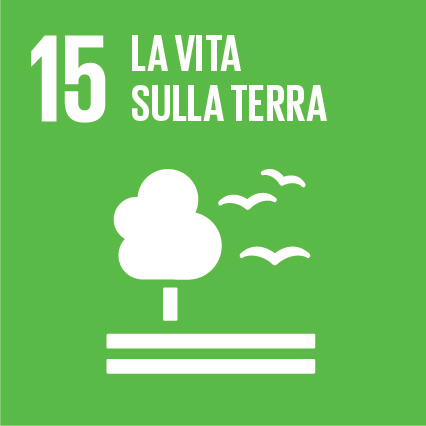

Target: Annuale
Status 2025: Raggiunto
SDGs:



Target: Annuale
Status 2025: Raggiunto

Il Gruppo BF integra la tutela della biodiversità e degli ecosistemi agricoli nel proprio modello operativo attraverso pratiche agronomiche sostenibili, tra cui approcci agroecologici, gestione conservativa dei suoli, agricoltura di precisione e interventi di ripristino degli habitat.
Nel 2025 sono stati destinati complessivamente 2.437,34 ettari a iniziative per la biodiversità, comprendendo cover crops, terreni incolti, piante mellifere, pioppeti e alberature, aree boschive, semina del riso su acqua, erba medica ed erbe generiche. La superficie interessata ha rappresentato il 30,56% dei 7.975,36 ettari considerati, superando ampiamente l’ obiettivo annuale del 10%.
La percentuale è risultata inferiore al 35,4% del 2024, principalmente a causa del cambiamento della strategia agronomica, delle dinamiche di mercato e della conseguente rimodulazione delle superfici, senza modificare l’ impegno del Gruppo verso una gestione sostenibile del territorio.